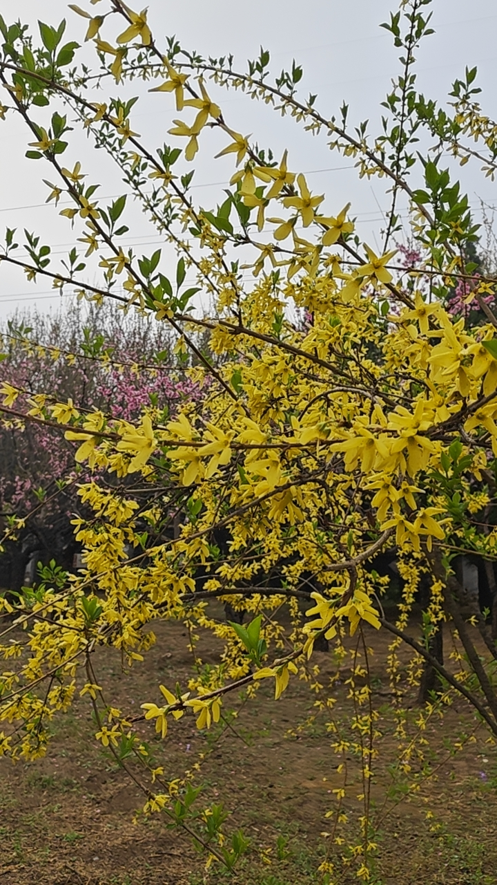
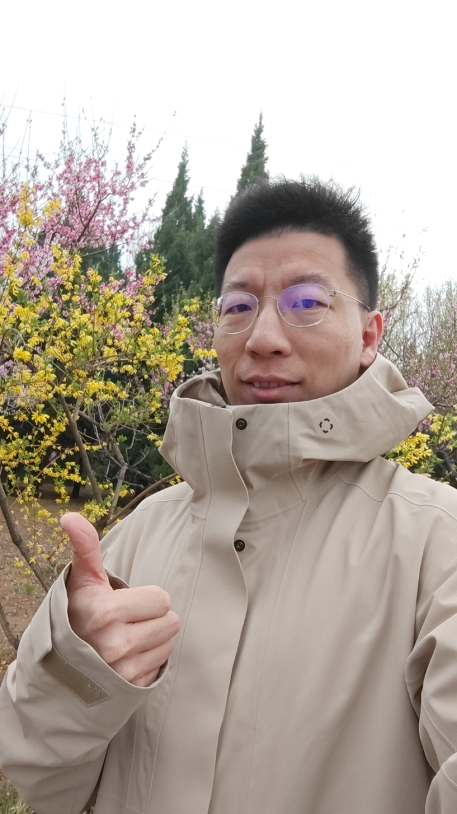
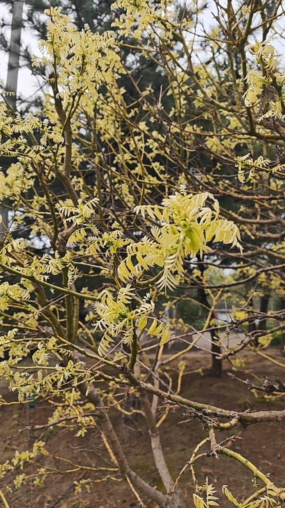
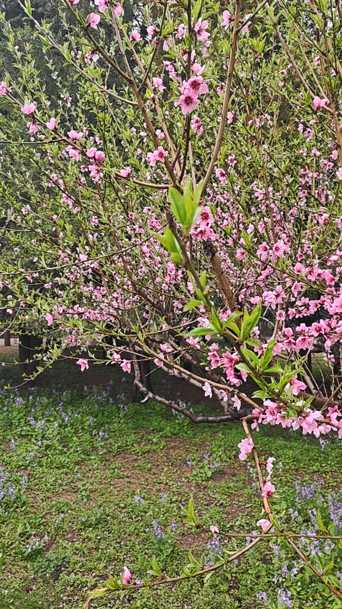
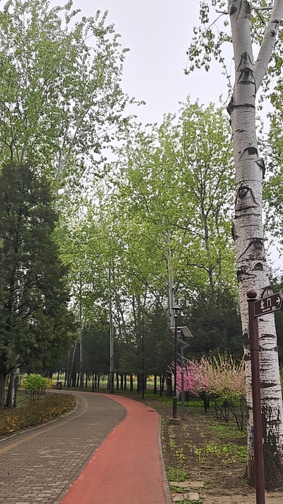
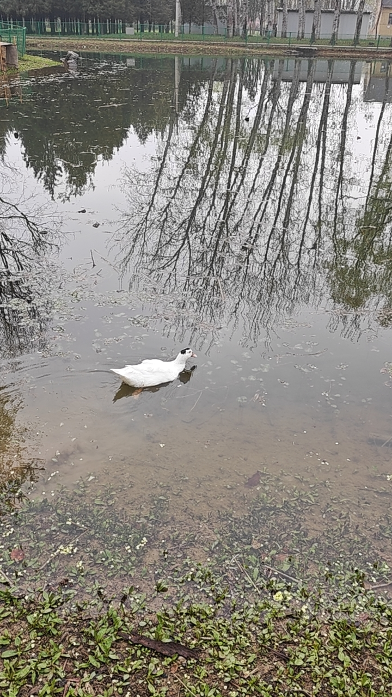
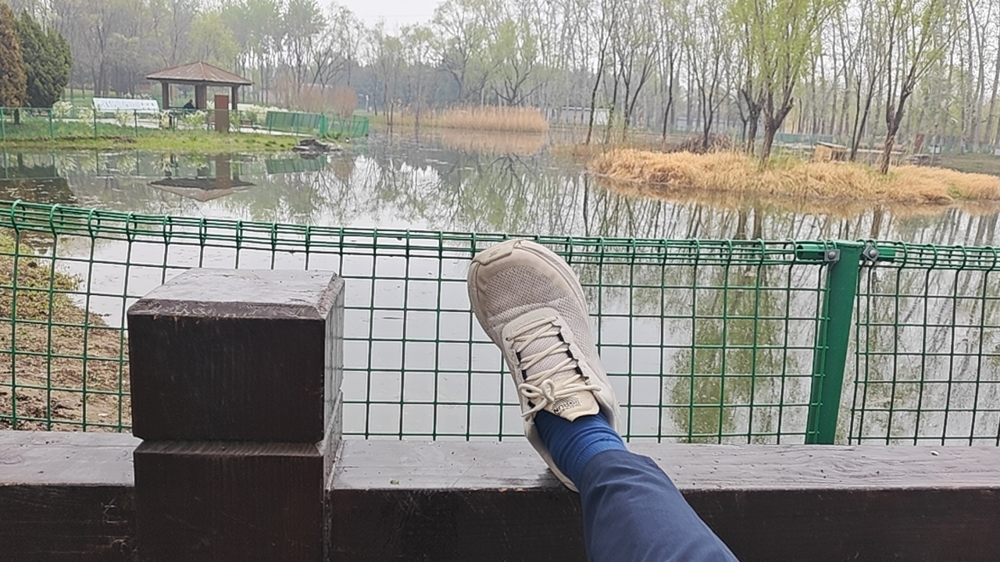

那天早晨没有太阳，阴天把所有的颜色都压了一层。出门的时候脑子里装着一件事：他想知道，不强迫自己思考、不让大脑做主人，是什么感觉。
壹 · 连翘
连翘开在路边，金黄明亮，不管不顾。连翘的特点是：它不会去想今年开得够不够好，不会担心花瓣的颜色正不正。它只是在做它这个物种在春天该做的事。

连翘盛放，粉樱虚化，晨光清冷
贰 · 自照
他停下来，在连翘与粉樱之间给自己拍了一张。比赞的手势，米色连帽外套，深绿针叶树作背景。这是一个人在春天里给自己留的存照，证明那天早晨，他曾无目的地站在花树下。

思染自拍，比赞，春花背景
叁 · 新叶
早春的嫩叶是通灵的。羽状复叶透着光，黄绿近柠檬色，像刚从枝条里挤出来的半透明颜料。光线在叶片间游走，不留阴影。树在发芽的时候，是不会想着要成为什么的。它只是在做它该做的事。

早春嫩叶，羽状复叶，光影通透
肆 · 鸿博
公园入口立着一块巨石，红字刻"鸿博公园"。共享单车斜靠石旁，电动车安静停在左侧。一个地方的名字，往往比它本身存在得更久。
伍 · 桃花
五瓣粉花，花心比花瓣深一个色号。桃花是古今同款的春天。嫩叶从花托处探出，草地的绿和桃花的粉是春天最经典的默契。

桃花近景，粉瓣绯心，绿草如茵
陆 · 径
步道分成了两条：左边是砖，右边是塑胶跑道。两条路都通向同一个方向。走路的人不需要方向，走本身就是方向。

公园步道，白树干，北门指示牌
柒 · 游鸭
白鸭在水里游弋，尾后一道细纹。水面上有树和凉亭的倒影，池边野花绕了一圈。生物多样性的意思大概是：我不必成为你，你也无需是我。

白鸭游弋，灰褐池水，树木倒影
捌 · 压腿
脚搭在池畔的木栏上，膝盖受力，大腿后侧有一点酸胀。这个感觉是身体在告诉他：我在。不需要用脑子去分析酸胀的程度，不需要判断拉伸够不够科学。只要身体在感受，这就够了。

池畔压腿第一人称视角，远景凉亭
×